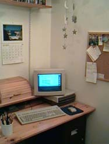
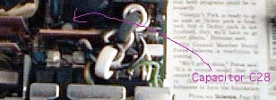

Duo Dock and Tick of Death Page

There are several kinds of docks, of two main types. The
full docks, such as the Apple Duo Docks, take the Duo inside
much like a tape into a VCR. They give ADB for keyboard and mouse,
video, floppy, SCSI chain, 2 NuBus card slots and two serial ports. The clip-on docks
just attach to the back of the Duo and still use the Duo's keyboard,
trackball and display, with various port attachments on the back
of the clipon dock.
Opening an Apple Duo Dock
This isn't bad at all though it is nowhere as convenient to install
NuBus cards into a Dock as it is for a typical Mac, such as a IIcx.
The process is:
- Remove the dock cover by pushing outwards on the inside of the slot
where the Duo is inserted, tilting the lid slightly, then lifting upwards.
Picture
- Disconnect the power supply leads by pinching the leads and lifting up.
Picture
- Loosen the two normal screws under the horizontal area where the Duo usually
slides in. There is one in the middle and one over
to the right. These screws
don't come out so just keep loosening them and you don't need to worry about them
coming out.
- Slide the whole non-case/non-powersupply towards the front of the dock just a
tiny bit, then lift up turn it over and set it down.
Picture
- You now have access to the NuBus slots. Note that you will need to
remove the top card to get to the bottom card, so fill the bottom slot with the
card you are less likely to want to remove if you have two. There is a little sliding
piece to hold what would normally be the top of the card but in a dock will be the side.
Reverse the steps above to reassemble the dock.
Diagnosing the Tick of Death
For whatever reasons, Duo Dock power supplies seem to fail after (sometimes) many years in
a characteristic way.
Typical Symptoms
- There is a periodic ticking from the dock, particularly after
periods of being unplugged.
- This can become more frequent. In mild cases, the ticking will go away
after the dock has been plugged in for an hour or two. In other cases,
the dock ticks just after the Duo is ejected and may continue ticking for
a while.
- Eventually, the dock becomes useless as it ticks instead of working.
If the Duo is stuck inside, and won't eject, you may need to take the lid
off to get it out. To do that, thin screwdrivers will be needed to press on
the tabs since the Duo is in the way. Or you can wait and hope the ticking
goes away and the Dock comes back to life for proper ejection.
- Avoiding having the dock unplugged seems to postpone the inevitable
degeneration to uselessness.
The Culprit
The usual failure is of the capacitor in location C28 which can
be fixed by replacing the capacitor. Evidently, some kind of design
flaw causes the capacitor to fail and the ticking is related to the
capictor failing to charge fully.

Fixing the Power Supply with the Tick of Death
This has a number of steps. You will need
- A replacement 100 mfd electrolytic capacitor. This is
easily available at Radio Shack as part # 272-1028, 100 mfd electrolytic capacitor
25 WVDC, with radial leads and cost $.99.
- Soldering iron, solder, and preferably a desoldering tool.
- Drill with a small bit for drilling out rivets.
- Torx T10 screwdriver. The really long tools for opening Classic and compact
Macs are the right size for this, in case you still have your MacCracker set from
1984.
- Some small (#8 x as small as possible) sheet metal screws to close the
power supply back up.
The process:
- Open the dock as described above.
- Remove the power supply from the dock by
pushing down on the two tabs that
hold it in place while tipping the dock so that the power supply will slide
out from gravity.
- Drill out the four rivets holding the two parts of the power supply case
together. There are
two on the top and two on the end.
- Open the power supply
- Remove the fan. You will need to bend
the flaps of metal (using pliers or fingers) to get to where you can slide the fan
out. When you disconnect the power leads for the fan, make a note of the
polarity for when you reassemble the power supply. Also note which way the
fan is blowing air so that you don't put it in backwards. Just in case you forget,
for mine the black lead for the fan is in the slot further away from the fan and
the red one is in the slot closer and the fan is oriented so that the word "PAT"
is readable from the viewpoint of the tall part of the power supply.
- Remove the cluster of power supply wires passing through a keyhole opening
in one the side walls. There is a rubber collar holding them together; you may
need to do a little bending of the metal to work it free and get
the power supply apart. I have needed to.
- Remove the 3 Torx screws holding
the power supply circut board to the power
supply case and separate the board from the
case as much as possible.
- Find capacitor C28, quite close to the wall connection pieces but on
the other side of a vertical circuit board. It is just on the other side of
that board from the word "CAUTION" printed on the board, lined up with the letter O.
- Wiggle the board free to
where you can get to the underside and unsolder the old capacitor at C28
and replace
it with the new one. Note that electrolytic capacitors have a polarity and
remember which way yours is and make sure the new one has the same orientation.
- Start putting things back together, reversing steps above. You will want
to use the short machine screws to close the power supply back up. Some bending
back of the metal case may be necessary; definitely to get the fan back in.
- Putting the power supply back into place in the case with the clips
may take some finagling, as perhaps the shape has changed slightly.
- Plug it in and see if it no longer ticks- the moment of truth!
Disclaimer: if this doesn't work, I have no idea what to do. You can always look for
a replacement power supply; these run about $50-$90 which gives some idea of the
demand. (IIci power supplies are available for $10-$20.) I have sucessfully
done this for three docks but there are certainly other ways that the power supply might
fail. It does seem to be a common occurance. As always, be careful! I always plug whatever
I just worked on into a power supply and throw the switch from a few feet away, out
of experience.
More updates: apparently, there are multiple models of Duo Dock power supplies out
there. In some cases, the defective electrolytic capacitor is in position C28-
not C24. If the capacitor on your power supply board in C28 does not look much like
your replacement capacitor, take a look around and see if you can figure out if it
is in C24 before giving up. I have not observed this firsthand, but many helpful
people have written in to describe this possibility.
Duo Links
Other Links
{kind=link}
{kind=link}
{kind=link}
{kind=link}
{kind=link}
{kind=link}
{kind=link}
{kind=link}
{kind=link}
{kind=link}
{kind=link}
{kind=link}
{kind=link}
{kind=link}